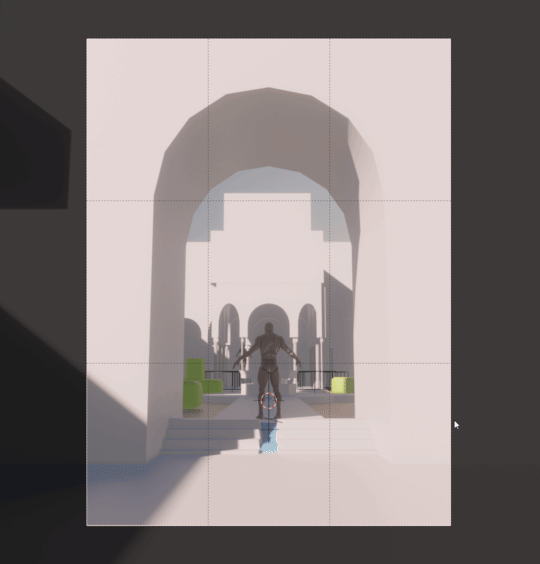

Composition
The Cam-Manager provides multiple tools helping you to setup your cameras and find a good composition. The pie menu is designed to optimize the currently active camera.
Overview Panel
The Overview Panel (Ctrl + Shift + C) is a valuable tool for the scene composition too. It helps you to keep the bigger picture and quickly compare different shots, angles. It supports you in keeping your cameras organized and keep an overview of the different values.

Lock/Unlock Camera

Locking and unlocking the cameras is super fast. Unlock the camera swiftly, make all the adjustments you want and lock it afterward to avoid accidental changing the camera position. You can easily lock the camera to the view as well. This allows you to change the camera framing with the common 3D navigation.
Camera Settings
Quickly adjust camera-specific settings from the viewport

Adjusting focal length from the pie menu

Adjusting the depth of field from the viewport
Viewport settings
Use the pie menu to quickly hide and show all UI elements. Display the composition guides to help you find the best framing and darken the area outside the final frame.